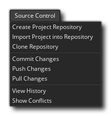
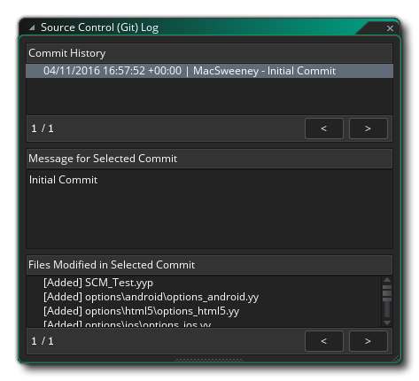
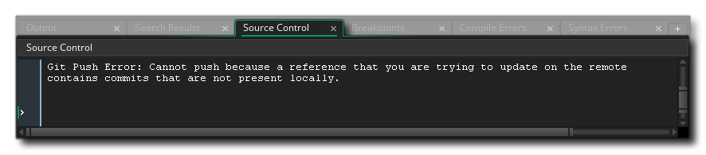

Source Control Management (SCM) ist die Bezeichnung für die Methode, mit Unterversionen oder Sicherungen Ihrer Projekte über ein Repository und eine lokale Quelle zu arbeiten. Grundsätzlich ist eine SCM-Lösung ein unabhängiges Softwarepaket, das alle Aspekte der Pflege, Änderung und des Vergleichs von Versionen Ihres Projekts während der Bearbeitung steuert. Dies ist besonders nützlich für diejenigen, die in einem Team arbeiten und kontrollieren müssen, wer was macht und sich nicht darum sorgen muss, Daten zu verlieren oder Änderungen vorzunehmen, die zu einem späteren Zeitpunkt rückgängig gemacht werden müssen, aber Einzelpersonen können von diesem leistungsstarken und dennoch flexiblen System profitieren System auch.
Es gibt verschiedene SCM-Tools für Sie, und GameMaker Studio 2 wird mit einem Git-Plugin geliefert, das sofort verwendet werden kann. Sie müssen keine zusätzlichen Pakete installieren, da alles im Paket mit dem Plugin selbst enthalten ist. Im Folgenden geben wir ein kleines Tutorial, wie man dieses Plugin einrichtet und die SCM-Tools mit einem Projekt verwendet. Am Ende der Seite geben wir auch einen Überblick über das SCM-Kontextmenü, auf das auch in den Tutorial-Abschnitten verwiesen wird.
Zuallererst müssen wir eine Identität für Git festlegen, um zu committen als, was bedeutet, dass wir zum Abschnitt PLugins - Quellcodeverwaltung (Git) der Einstellungen gehen und Ihre Authentifizierungsdetails hinzufügen müssen.
Diese Authentifizierungsidentität wird für alle zukünftigen Projekte verwendet, und GameMaker Studio 2 bietet Ihnen zwei verschiedene Möglichkeiten, wie Sie sie einrichten können:
- Benutzername und Passwort: Wenn Sie auf die Schaltfläche "Neuen Benutzer hinzufügen / Authentifizierung übergeben" klicken, erscheint das folgende Fenster, in dem Sie die Repository-URL, den Benutzernamen und das Passwort eingeben können:
Wenn Sie möchten, dass dies nur ein bestimmtes Repository betrifft, platzieren Sie die URL für das Repository im oberen Feld. Wenn es jedoch domänenweite Authentifizierung ist, die Sie wollen (zB: " bitbucket.org " oder " github.com ") Dann legen Sie einfach die Domäne und nichts anderes. Wenn etwas auf die Authentifizierung überprüft werden muss, sucht es zuerst nach einer bestimmten Repository-Übereinstimmung und dann nach einer Domänenübereinstimmung. Dies ermöglicht Ihnen eine Standardauthentifizierung für eine Domäne und überschreiben mit spezifischen Details für bestimmte Repositories später.
HINWEIS: Wenn Sie ein externes Repository verwenden, sollten Sie den Benutzernamen und das Passwort für das Konto verwenden, das für dieses Repository eingerichtet wurde. Wenn Sie jedoch ein lokales Repository verwenden möchten, können Sie einen beliebigen Benutzernamen und ein beliebiges Passwort verwenden.- SSH-Schlüsselpaare: Wenn Sie auf "Neue SSH-Schlüsselpaar-Authentifizierung hinzufügen" klicken, wird das folgende Fenster angezeigt, in das Sie die Repository-URL und das Kennwort eingeben können, bevor Sie die erforderlichen Pfade für die öffentlichen Schlüssel und privaten Schlüssel angeben:
Wie bei der Authentifizierung mit Benutzername / Passwort können Sie bei der Verwendung von SSH-Schlüsselpaaren domänen- und repositoryspezifische Authentifizierungen verwenden. Wenn Sie bereits ein SSH-Schlüsselpaar erstellt haben, können Sie hier die Pfade sowie das für den Zugriff erforderliche Kennwort festlegen. Wenn Sie einen schnellen Zugriff auf den öffentlichen Schlüssel benötigen, beachten Sie die Schaltfläche zum Kopieren
kopiert automatisch den Inhalt für Sie in die Zwischenablage. Wenn Sie noch kein SSH-Schlüsselpaar haben, wird durch Klicken auf die Schaltfläche Create KeyPair ein Dateidialogfeld angezeigt, in dem der private Schlüssel platziert werden kann. Der öffentliche Schlüssel wird daneben erstellt. Dadurch werden die Pfade zum öffentliche und private Schlüssel automatisch für Sie.
Diese Einstellungen werden nun verwendet, um mit dem Repository zu kommunizieren (IE: Git Hub, Bit Bucket, etc.), wenn Sie Klon, Push und Pull Anfragen bearbeiten. Allerdings müssen Sie noch die pro-Projektoptionen einzurichten, die durch die Öffnung der getan werden kann, Hauptoptionen und dann auf die Aktivieren Source Control Option. Dies aktiviert SCM für das aktuelle Projekt.Sobald Sie die Quellcodeverwaltung aktiviert haben (und sie angewendet oder die Spieloptionen geschlossen haben), erscheint ein neues Kontextmenü oben in der IDE mit der folgenden Option (die wir in den restlichen Abschnitten dieser Seite untersuchen werden): 
HINWEIS: Wenn Sie die Authentifizierungsdetails erneut bearbeiten müssen, doppelklicken Sie einfach auf den Eintrag und das Fenster mit den Details wird geöffnet, das Sie bearbeiten können. Sie können die URL jedoch nicht umbenennen. Wenn Sie die URL ändern müssen, müssen Sie die Authentifizierungsdetails löschen und neu hinzufügen. Um die Authentifizierungsdetails zu löschen, klicken Sie auf die Schließen-Schaltfläche auf der linken Seite der Zeile im Haupteinstellungen-Fenster.
Sie müssen nun die GameMaker Studio 2 IDE mit einem Repository verknüpfen:
- Erstellen Sie ein Projekt-Repository
- Verschieben Sie das aktuelle Projekt in ein externes Repository
- Klonen Sie ein vorhandenes Repository
Im ersten Fall, wenn Sie ein Projekt-Repository erstellen, wird ein Git-Repository direkt dort erstellt, wo sich Ihr Projekt befindet. Im Git-Sprachgebrauch ist dies ein "Nicht-Nackt-Repository", also macht Push / Pull in diesem Fall keinen Sinn, aber Sie können weiterhin Projektänderungen festschreiben und verfolgen sowie Änderungen und Revisionen rückgängig machen. Um dies einzurichten, müssen Sie nur auf Quellcodeverwaltung > Projekt-Repository erstellen im Hauptmenü klicken.
Möglicherweise verfügen Sie jedoch bereits über ein vorhandenes Projekt und möchten es in einem externen Repository zur Verfolgung und Freigabe in Ihrem Team speichern. Dies setzt voraus, dass bereits ein externes Repository eingerichtet wurde, sowie der korrekte Benutzername und das Passwort, die in Ihren Identitätspräferenzen festgelegt wurden, um darauf zuzugreifen. Wenn Sie bereit sind, klicken Sie auf Quellcodeverwaltung > Projekt in Repository importieren und füllen Sie die URL aus.
Schließlich als Komfortfunktion können Sie ein externes Repository durch die IDE klonen. Auch hier benötigen Sie den Benutzernamen und das Kennwort für das Repository, mit dem Sie eine Verbindung herstellen möchten, und zwar in Ihren Identitätseinstellungen, und dann müssen Sie nur auf Quellcodeverwaltung > Repository klonen klicken. Füllen Sie die URL aus (verwenden Sie die HTTPS-Variante anstelle von SSH) und sagen Sie, wo sie hingehört.
Sobald der Klon fertig ist, öffnet er automatisch einen Dateibrowser, damit Sie das Projekt öffnen können, wenn Sie möchten.
Während Sie an Ihrem Projekt arbeiten, erstellen Sie auf natürliche Weise Sprites, bearbeiten Skripte, löschen Zeitachsen und was sonst noch benötigt wird, wenn sich Ihr Projekt im Laufe der Zeit entwickelt. Dies sind alles Aktionen, die Sie im Auge behalten und zurückbekommen sollten, wenn etwas schief geht. Dies ist der Hauptgrund für die Verwendung der Versionskontrolle - so dass alle Unfälle rückgängig gemacht werden können - und wir werden Sie schnell von Anfang an durch den grundlegenden Arbeitsablauf führen, damit Sie verstehen, wie dies funktioniert.
Erstellen Sie von Anfang an ein neues GML-Projekt und aktivieren Sie dann die Quellcodeverwaltung über die Hauptoptionen. Dies gibt uns Zugriff auf das Source Control-Menü oben, so dass wir sofort zum Erstellen des Project Repository gehen. Wenn Sie sich die Raumressourcen ansehen, können Sie sehen, dass der Standardraum einen roten Ausruf erhalten hat
, was bedeutet, dass es von seinem letzten Zustand modifiziert wurde. Wenn wir andere Ressourcen im Projekt hätten, würden Sie sehen, dass sie alle das gleiche Symbol haben, wie in der Abbildung unten gezeigt:
Wir haben jetzt die Möglichkeit, entweder das leere Projekt zu übernehmen oder es in einen Basiszustand zu versetzen. Vorerst werden wir unser erstes Commit durchführen, also klicken Sie auf Quellcodeverwaltung > Änderungen festschreiben. Dies wird nun ein Fenster in drei Bereiche aufgeteilt:
- Staged Changes - Dies sind die Änderungen, die an die Quelle übergeben werden. Dies wird wahrscheinlich leer sein, aber es kann eine Änderung der Hauptoptionen anzeigen, was in Ordnung ist.
- Ungestartete Änderungen - Dies zeigt die Dateien, die sich geändert haben, aber wir haben Git nicht gesagt, dass wir sie übernehmen wollen - sie sind "ausstehende" Änderungen.
- Commit Message - Dies ist eine Notiz, die wir hinzufügen können, um zu erklären, was die Änderungen sind.
Klicken Sie zunächst auf die Schaltfläche Stage All, um alle Änderungen zu übernehmen, und geben Sie beispielsweise "First Commit!" Ein. in die Commit-Nachricht und klicken Sie auf Commit. Alle unsere Ressourcen sollten jetzt ein grünes Häkchen haben
Das bedeutet, dass keine Änderungen gefunden wurden.
Unser Arbeitsprozess kann jetzt beginnen und wir können mit dem Aufbau unseres Projekts beginnen und Änderungen speichern und festschreiben, genau wie wir es in den obigen Absätzen getan haben.
Nachdem Sie eine Weile gearbeitet haben, möchten Sie vielleicht überprüfen, was Sie zu einem bestimmten Zeitpunkt festgelegt haben, und deshalb sollten Sie den Commit-Verlauf öffnen. Um das Verlaufsfenster zu öffnen, gehen Sie einfach zu Quellcodeverwaltung > Verlauf anzeigen, wodurch ein weiteres Fenster mit drei Bereichen geöffnet wird: 
Der obere Bereich beschreibt die Commits, der mittlere Bereich beschreibt den Kommentar, der dem ausgewählten Commit übergeben wurde, und der untere Bereich beschreibt die Dateien, die bei diesem Commit geändert wurden. Beachten Sie, dass wenn Sie ein Diff-Tool eingerichtet haben, ein Doppelklick auf eine Datei in diesem Fenster das Diff-Tool öffnet und Sie die Änderungen zwischen den Dateien sehen können.
Oben haben Sie gesehen, wie Sie ein Repository erstellen und Dinge dazu festlegen, aber was passiert, wenn Sie einen Fehler machen und zu einem früheren Commit zurückkehren wollen? Lassen Sie uns einen bewussten Fehler machen und sehen, wie wir damit umgehen können...
Erstellen Sie zuerst eine neue Ressource - in diesem Beispiel erstellen wir eine Skript-Ressource - und Sie sehen zunächst kein Status-Icon, da es soweit vorhanden ist, dass die Quellcodeverwaltung noch nicht existiert. Fügen Sie in der Skript-Ressource eine einfache Codezeile hinzu, beispielsweise:
show_debug_message("Hello World");
Wenn Sie jetzt den Code-Editor schließen, wird das Skript gespeichert und das geänderte Dateisymbol angezeigt
Die vorgenommenen Änderungen werden sein:
- die.yyp-Projektdatei
- eine Ansichtsdatei
- das Skript GML selbst
- die.yy-Datei, die darauf verweist
Sie sollten eine Commit-Nachricht eingeben und dann auf die Schaltfläche " Commit" klicken, genau wie zuvor erläutert. Jetzt kehren wir zu unserem Skript zurück und ändern die Codezeile in (zum Beispiel):
show_debug_message("Hello World, how are you?");
Wenn wir den Code-Editor schließen, wird wieder ein rotes Symbol neben dem Skript angezeigt, aber wir haben festgestellt, dass wir einen Fehler mit unserem Code gemacht haben, und wir wollen zu einer früheren Version zurückkehren, um das Problem zu beheben Öffnen Sie das Skript und beheben Sie es leicht, da das Beispiel so einfach ist, aber in großen Projekten ist das normalerweise kein praktikabler Ansatz. Was wir tun müssen, ist unsere Änderungen rückgängig zu machen.
Um eine Änderung rückgängig zu machen, müssen wir zunächst das Bestätigungsfenster erneut öffnen. Daher gehen wir erneut zu Quellcodeverwaltung > Änderungen festschreiben. Unsere geänderte Datei wird wieder bereit für die Übertragung bereitgestellt, aber das ist nicht das, was wir wollen, also klicken wir auf die Schaltfläche "Alle aufheben", um sie aus dem Bereitstellungsbereich zu entfernen.
Wenn wir jetzt rechts klicken
In der Datei, die wir geändert haben, erhalten wir ein Kontextmenü mit der Option Pfad zurücksetzen:
Wenn Sie diese Option auswählen, werden die Dateien in den vorherigen Zustand zurückversetzt, in dem sie sich befanden.
WICHTIG! Wenn Sie den Vorgang rückgängig machen, erhalten Sie eine Meldung, in der Sie aufgefordert werden, das aktuelle Projekt neu zu laden oder zu speichern, da die Dateiüberprüfung Änderungen auf dem Datenträger erkennt:Sie müssen Neu laden und nicht speichern, da beim Speichern der Speicherinhalt gespeichert und nicht die neu geladenen Dateien neu geladen werden.
Das ist großartig, wenn Sie etwas bearbeiten und es wieder ändern möchten, ohne bereits eine Festschreibung durchgeführt zu haben. Aber was ist, wenn Sie eine oder mehrere Änderungen vorgenommen haben und zu einer früheren Festschreibung zurückkehren möchten? Nun, lassen Sie uns unser Skript erneut bearbeiten, um zu sagen:show_debug_message("This is a bad idea");
Jetzt machen wir es wie zuvor, um es unter die Kontrolle der Quelle zu bekommen. Also, das war eine schlechte Idee und wir wollen zurückrollen, was bedeutet, dass wir mit dem Öffnen des Fensters Quellcodeverwaltung > Verlauf anzeigen erneut beginnen müssen. Wir werden nun eine Liste aller vorherigen Commits in diesem Fenster sehen, beginnend mit dem initialen Commit, dem Commit für das Script und dann dem Commit für das Script, das wir als "schlechte Idee" bearbeitet haben:
Wir haben jetzt zwei Möglichkeiten. Wir können eine komplette Revision wiederherstellen - die alle geänderten Dateien in die des gewählten Commits zurückversetzt - oder wir können einen Pfad wiederherstellen, der einfach eine einzelne Datei wiederherstellt. Beginnen wir mit der ersten Option:
- Rechtsklick
- Wählen Sie Zurück zu dieser Revision, und wählen Sie in der Warnmeldung die Option ReLoad.
Sie sollten sehen, dass das Skript jetzt ein rotes Statussymbol hat
Wir können uns dann für das Projekt engagieren und wir sind wieder da, wo wir wieder waren. Allerdings können wir auch diese Aktion für die Datei rückgängig machen und unsere "schlechte Idee" commit zurückbekommen, indem wir Folgendes tun:
- Öffnen Sie das Fenster " Änderungen übernehmen".
- Starte das Skript mit dem Code "Hello World" darin.
- Rechtsklick
Jetzt haben wir wieder die fehlerhafte Datei im Projekt! Nun, wir können diese Gelegenheit nutzen, um nur diesen Dateipfad wiederherzustellen, anstatt alles auf eine vorherige Revision zu übertragen. Dafür müssen wir folgendes tun:
- Öffnen Sie das Fenster Verlauf anzeigen.
- Klicken Sie auf das zweite Commit (das "Hello World" Commit).
- Rechtsklick
Wir sollten wieder unseren "Hello World" -Code haben und dann einen neuen Commit durchführen, um die Quellcodeverwaltung erneut mit der korrigierten Datei zu aktualisieren.
Wenn Ihr Projekt in einem externen Repository gespeichert ist, müssen Sie daran denken, beide Änderungen drücken und keine neue ziehen. Der Grund dafür ist, dass Sie Ihre Änderungen beim Commit lokal speichern, sodass Sie von einer Internetverbindung aus arbeiten und die Synchronisierung durchführen können, wenn Sie bereit sind, und um die Änderungen zu synchronisieren, übertragen Sie Ihre Änderungen an das Remote-Repository. Das Ziehen von Änderungen bedeutet, dass Sie alle Änderungen, die andere aus dem Remote-Repository vorgenommen haben, in Ihr lokales Repository übernehmen möchten. Dies bedeutet jedoch, dass es manchmal vorkommen kann, dass Benutzer dieselben Dateien bearbeiten können, was wiederum einen Zusammenführungskonflikt verursacht. Sie müssen wissen, wie man mit diesen Konflikten umgeht, also werden wir absichtlich einen erstellen und Ihnen dann zeigen, wie Sie damit umgehen.
HINWEIS: Die gemeinsame Nutzung eines lokalen Projekt-Repositorys (auch über einen Dateisynchronisationsdienst wie Dropbox) wird nicht empfohlen, da Commits in der Regel direkt darauf geschrieben werden und Sie somit sehr wenig Konfliktschutz haben.
Um unseren Konflikt zu erzeugen, müssen wir zuerst zwei lokale Repositories haben, eines für das Master-Repository und eines für unser Exemplar. So erstellen Dazu brauchen wir das Repository klonen, die mit den folgenden Schritten durchgeführt wird:
- Gehen Sie zu Quellcodeverwaltung > Repository klonen.
- Geben Sie im Feld URL den Pfad zu dem Projekt ein, das wir oben im Handbuch Zurücksetzen von Dateien eingerichtet haben (standardmäßig wird dies der Fall sein) D:\Users\<Username>\Documents\GameMakerStudio2\<ProjectName> ).
- Sie müssen dann einen Pfad zum Klonen festlegen: Wenn Sie auf die Schaltfläche "Okay" klicken, erhalten Sie folgende Warnung, wenn Sie versuchen, ein nicht-leeres Repository zu klonen:
Sie können hier erneut auf "Okay" klicken.
- Sie werden nun mit einem Verzeichnis-Explorer konfrontiert, um ein "blankes" Proxy-Repository zu erstellen (dies ist ein Repository, das Sie zum Beispiel sicher in Dropbox speichern können ). Navigieren Sie zu dem Speicherort, an dem Sie dieses Proxy-Repository erstellen möchten, und wählen Sie den zu verwendenden Ordner aus (oder erstellen Sie ihn).
Sobald Sie dies getan haben, wird Ihr ursprüngliches Projekt von GameMaker Studio 2 an den Proxy übertragen und ein neuer an den Pfad, den Sie im Fenster "Clone Repository" festgelegt haben, angelegt und automatisch einen Dateibrowser geöffnet, damit Sie das gespeicherte Projekt öffnen können. Wenn Sie jetzt zu Quellcodeverwaltung > Verlauf anzeigen gehen, sehen wir unsere ursprünglichen Commits und einen neuen "Push for Clone":Sie haben jetzt Ihr Repository geklont und können weiter an der lokalen Version des Projekts arbeiten.
In diesem Abschnitt betrachten wir die Lösung von Konflikten zwischen einem geklonten lokalen Repository und einem Master-Repository (weitere Informationen finden Sie im Abschnitt über das Klonen). Angenommen, Sie verwenden jetzt ein lokales Repository, müssen wir eine Datei bearbeiten und dann einen Konflikt verursachen. Öffnen Sie also das Testskript, das wir verwendet haben, und ändern Sie die Nachricht "Hello World" in etwa so:
show_debug_message("Hello World, How Are You?");
Sie sollten nun das Projekt speichern und es in das lokale Repository übertragen. Jetzt, da wir mit einem Remote-Master-Repository verbunden sind (auch wenn es sich um einen handelt, den wir auf den gleichen Datenträger geklont haben), müssen wir einen Push ausführen, um die Änderungen zum Master zu bringen. Wechseln Sie dazu zu Quellcodeverwaltung > Push-Änderungen. Dadurch erhalten Sie eine Statusaktualisierung auf der Registerkarte " Quellcodeverwaltung":
Wir müssen nun unser ursprüngliches Projekt öffnen (nicht das geklonte), also navigieren Sie zu dem Ort, wo Sie es auf der Festplatte gespeichert haben - oder überprüfen Sie einfach die Recent Projects im File- Menü, wie es direkt unter dem aktuellen sein sollte - und laden Sie es in GameMaker Studio 2. Eine einfache Möglichkeit, um zu überprüfen, ob Sie das richtige Projekt haben, besteht darin, einfach das Skript zu überprüfen, und wenn die Nachricht "Hallo Welt" ist, dann haben Sie die richtige, oder Sie können das Ansichtsverlaufsfenster öffnen und das überprüfen.
Jetzt müssen Sie das Skript erneut bearbeiten, also lesen Sie Folgendes:
show_debug_message("This will cause a conflict.");
Dies kann auf der Festplatte gespeichert werden und die Änderungen werden übernommen. Wenn Sie jedoch versuchen, diese Änderungen zu übernehmen, erhalten Sie die folgende Meldung: 
Jemand hat bereits Änderungen vorgenommen, die Sie noch nicht haben! Das bedeutet, dass Sie das Repository abrufen müssen, um zu sehen, was genau das Problem ist. Wechseln Sie dazu zu Quellcodeverwaltung > Änderungen ziehen. Dies wird zwei Fenster anzeigen, das erste ist eine Warnung über geänderte Dateien (wie bei vorherigen Aktionen möchten Sie hier neu laden und nicht speichern), und das andere ist das Konfliktfenster:
In diesem Fenster werden die widersprüchlichen Dateien in einer Liste auf der linken Seite angezeigt, und Sie können die Dateien aus dieser Liste mit der linken Maustaste auswählen
(oder wählen Sie mehrere Dateien mit
+
- Use Theirs - Dies überschreibt die Änderungen, die Sie mit dem aus dem Remote-Repository vorgenommen haben.
- Use Mine - Dadurch werden die Änderungen aus dem Remote-Repository mit den von Ihnen vorgenommenen Änderungen überschrieben.
- Zusammenführen - Dies wird versuchen, ein externes Zusammenführungswerkzeug zu öffnen, um den Konflikt zu behandeln.
- Wählen Sie Merge-Tool - Damit können Sie das Merge-Tool konfigurieren (weitere Informationen finden Sie im Abschnitt Verwenden eines externen Merge-Tools).
Jetzt können Sie mit den Schaltflächen den Konflikt aussortieren, aber bevor Sie das tun, öffnen Sie einfach die konfliktbehaftete Datei, um genau zu sehen, was das Problem ist. Wenn Sie das Skript öffnen, das in Konflikt steht, sieht es jetzt so aus:
Dies zeigt, dass "Dies wird einen Konflikt verursachen" ist auf dem HEAD (das ist, was wir in das lokale Repository geschoben haben) und dass "Hallo Welt, wie geht es dir?" wird vom Master, dem Remote-Repository, gezogen. Sie können jetzt zum Fenster Konflikte zurückkehren und auf Ihre verwenden klicken, um die geänderte Datei zu übernehmen und die aktuelle HEAD-Datei zu überschreiben. Das Skript wird nun als geändert markiert und Sie sollten einen neuen Commit und Push ausführen, bevor Sie fortfahren.
Beachten Sie, dass wir dies in der GameMaker Studio 2 IDE beheben konnten. Wenn wir die Zeilen 1, 2, 3 und 5 entfernen, bleibt uns nur noch übrig show_debug_message(“Hello World, How Are You?”) und speichern Sie es, es wird den Konflikt beheben, da Git davon ausgehen wird, dass Sie wissen, was Sie mit Ihrer eigenen Datei machen. Es ist fehleranfällig, daher wird empfohlen, ein Merge-Tool zu installieren, das dann konfiguriert und verwendet wird, anstatt manuell zu fusionieren.
Wenn Sie mit anderen Personen an einem Projekt arbeiten, besteht immer die Möglichkeit eines Konflikts, da mehrere Personen die gleiche Datei bearbeiten und die meisten Quellcodeverwaltungssysteme einen guten Versuch zum Zusammenführen beliebiger konfliktbehafteter Dateien durchführen können. Wenn jedoch Änderungen an der Datei vorgenommen werden Der gleiche Ort, es erfordert ein wenig Hilfe, um zu wissen, was zu tun ist - das ist, wo ein Merge-Tool kommt, um Ihnen die Änderungen zu zeigen, und lassen Sie sich entscheiden.
Da jedes Merge-Tool anders ist, gibt es vier Makros, die verwendet werden können, um Dateien anzugeben, die im Conflicts- Fenster durch Klicken auf die Schaltfläche Choose Merge Tool eingerichtet werden können:
Wenn Sie auf diese Schaltfläche klicken, öffnet sich das Einstellungsfenster auf dem Git-Plugin:
Hier geben Sie einen Pfad zum ausgewählten Merge-Tool und dann einen Merge Tool Options- Makro (oder Makros) an, der bei der Entscheidung, was zu tun ist, mit den folgenden Optionen verfügbar ist:
- ${scm_mine}: Pfad zu deiner Version
- ${scm_thers}: Pfad zu ihrer Version
- ${scm_base}: Pfad zu der Version vor den widersprüchlichen Änderungen
- ${scm_merged}: Pfad zu dem Ort, an dem das Merge-Tool gespeichert werden soll
Als Hilfe bei der Einrichtung, wenn Sie bestimmten Merge-Tools einen Pfad zuweisen, wird GameMaker Studio 2 je nach ausgewähltem Tool einige Standardwerte eingeben:
- KDiff3: ${scm_theirs} ${scm_mine} -o ${scm_merged}
- Meld: ${scm_mine} ${scm_merged} ${scm_theirs}
- Notizblock ++: ${scm_merged}
- TortoiseMerge: /base:${scm_base} /theirs:${scm_theirs} /mine:${scm_mine} /merged:${scm_merged}
Beachten Sie, dass Sie das Skript in der IDE öffnen und versuchen können, es von dort aus zu beheben, wenn Sie kein Merge-Tool verwenden (oder nicht verwenden möchten).
Also, zurück zu unserem Beispiel Conflict wie oben im Abschnitt Conflicts... erwähnt. Sie haben einen Pull vom Master ausgeführt und eine der Dateien ist konfliktbehaftet. Dies öffnet das Fenster "Versionskontrollkonflikte", in dem Sie auf das konfliktbehaftete Skript klicken können und nun auf "Zusammenführen" klicken, da Sie das Zusammenführungstool konfiguriert haben. Wenn Sie auf Zusammenführen klicken, wird jetzt das Werkzeug geöffnet, in dem Sie mit dem Konflikt fertig werden und dann die bereitgestellten Makros verwenden können, um die erforderlichen Änderungen vorzunehmen. Sobald Sie das Merge-Tool abgeschlossen und geschlossen haben, zeigt das GameMaker Studio 2 IDE das folgende Bestätigungsfenster an:
Beantworten Sie diese Eingabeaufforderung einfach mit "Ja", wie Sie es selbst mit dem Zusammenführungstool getan haben. Anschließend müssen Sie diese Änderung bestätigen, um das Ende des Zusammenführungsvorgangs zu signalisieren ( Quellcodeverwaltung > Änderungen festschreiben). Das Bestätigungsfenster wird nun angezeigt dass eine Zusammenführung durchgeführt wird und einige nicht gespeicherte Dateien angezeigt werden:
Diese nicht gespeicherten Dateien sind unsere Skriptdatei mit dem Zusatz von .base, .ours und .theirs. Wir können alle diese Dateien löschen, also klicken Sie auf
Sie können jetzt auf Bestätigen klicken.
Aufgrund der Tatsache, dass Sie Probleme mit anderen Dateien haben können, bedeutet dies, dass Ihr Workflow bei der Verwendung von Remote-Repositorys oder gemeinsam genutzten Repositories wie folgt aussehen sollte:
Make Changes > Save > Commit > Pull > Merge > Push
Sie sollten auch ein Diff-Tool für die Verwendung bei Commits zu einem Repository einrichten. Dies wird in den Voreinstellungen wie für das Merge-Tool festgelegt:
Das Diff-Tool wird ähnlich wie das Merge-Tool konfiguriert, verwendet jedoch nur das ${scm_base} und ${scm_theirs} Optionen - in diesem Fall ${scm_base} repräsentiert die unmodifizierte Datei während ${scm_theirs} repräsentiert den aktuellen Status der Datei. Die Werkzeugoptionen sollten bereits mit den Standardoptionen für Meld, KDiff3 und TortoiseMerge ausgefüllt sein, genau wie beim Merge-Werkzeug. Beachten Sie, dass GameMaker Studio 2 die Ausgabe von einzelnen Datei-Diff-Patches nicht unterstützt, daher gibt es keinen Standard für Notepad.
Um Änderungen zwischen aktuellen und früheren Revisionen mithilfe des Diff-Tools anzuzeigen, öffnen Sie einfach das Fenster Commit, und doppelklicken Sie dann auf eine Datei. Wenn das Tool korrekt eingerichtet wurde, wird es gestartet und Sie können die Änderungen zwischen den Dateien sehen.


Kontextmenü der Quellcodeverwaltung
Wenn Sie die Quellcodeverwaltung für ein Projekt aktiviert haben (siehe oben das Kapitel Git-Plugin für die Quellcodeverwaltung einrichten ), zeigt das GameMaker Studio 2 das folgende Kontextmenü an:
Hier beschreiben wir jede der verfügbaren Optionen (die meisten davon werden in den obigen Tutorial-Abschnitten ausführlicher erklärt):
- Projekt-Repository erstellen: Mit dieser Option können Sie ein lokales Repository im selben Verzeichnis wie Ihre Projektdateien erstellen.
- Projekt in Repository importieren: Mit dieser Option können Sie ein Projekt in ein externes Repository importieren.
- Clone Repository: Mit dieser Option können Sie ein Repository von einer Quelle zu einem neuen Ziel klonen.
- Commit Changes: Mit dieser Option können Sie geänderte Dateien in Ihrem Projekt ablegen und anschließend in das Repository übertragen.
- Push Changes: Nach einem Commit oder einem Merge wird diese Option verwendet, um die Änderungen an das Master-Repository zu übertragen.
- Pull Changes: Mit dieser Option können Sie das lokale Repository aktualisieren, indem Sie die geänderten Dateien aus dem Master-Repository ziehen.
- Verlauf anzeigen: Dadurch wird das Verlaufsfenster geöffnet, in dem Sie den gesamten Versionsverlauf des Projekts anzeigen und bestimmte Dateipfade oder ganze Revisionen zurücksetzen können.
- Show Conflicts: Dies öffnet das Conflicts-Fenster und listet alle konfliktbehafteten Dateien auf, die eventuell im Projekt vorhanden sind. Sie können damit entweder über die GameMaker Studio 2 IDE oder mit einem speziellen Merge-Tool umgehen.